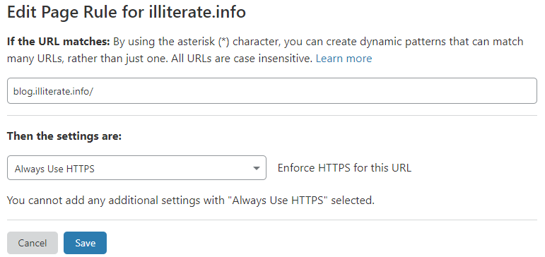

用hugo结合github建立个人静态网站
2021-01-14
hugo生成静态网页
安装hugo
- 访问Github下载Hugo的应用程序，下载地址 https://github.com/gohugoio/hugo/releases
- windows请选择下载hugo_0.xx.0_Windows-64bit.zip
- 下载完成止之后解压文件至C:\Windows\system32，若其他路径需添加到系统环境变量Path中
- 打开CMD，执行 hugo version 命令验证是否安装成功
C:\Users\XXXXXX>hugo version
Hugo Static Site Generator v0.80.0-792EF0F4 windows/amd64 BuildDate: 2020-12-31T13:37:57Z
本地hugo目录
- 新建/指定本地目录，通过hugo把站点生成到该目录下 （CMD中） $ hugo new site E:/website/second-blog
- 命令执行后查看E:/website/second-blog目录，查看文件目录结构。
│ config.toml
│
├─archetypes
│ default.md
│
├─content
├─data
├─layouts
├─static
└─themes
安装git
- 从git官网 https://git-scm.com/downloads/ 下载
- 安装git
安装hugo主题
- 下载一个主题并加载到config.toml文件中 （CMD中）
git clone https://github.com/yihui/hugo-ivy.git
- 通过在 config.toml 配置使用：theme = “hugo-ivy”
另一种方法（未尝试）： 下载一个主题并加载到config.toml文件中：
git init
git submodule add https://github.com/budparr/gohugo-theme-ananke.git themes/ananke
# Edit your config.toml configuration file
# and add the Ananke theme.
echo 'theme = "ananke"' >> config.toml
生成新的文章 （CMD中）
hugo new posts/first-post.md
在content目录中会自动以archetypes/default.md为模板在content/posts目录下生成一篇名为first-post.md的文章草稿：
---
title: "First Post"
date: 2021-01-14T14:38:08+08:00
draft: true
---
在content/posts目录下打开并编辑，完成后去掉标记为草稿的这一行：draft: true
预览
在cmd中使用如下命令建立本地服务器：
hugo server
在浏览器中输入网址http://localhost:1313/就可以在浏览器中查看网页效果了
发布
没有问题了便可以使用如下命令：
hugo
如此一来网页便生成在默认的public子目录中了。
发布并托管到Github
- 创建GitHub Pages site 在Github中添加一个空白repository，注意不要添加如README，.gitignore等文档。得到Github中该repository的网址：
illiterate.github.io

- 使用/docs发布到master branch 在config.toml中添加如下一行配置，使得生成的网页默认保存在/docs子目录下：
publishDir = docs
运行hugo命令后生成的网页文件将保存在/docs子目录下。以便将所有文档push到Github的master branch
- 在网站本地文档根目录中初始化git
git init
git add .
git commit -m "first commit"
git remote add origin https://github.com/illiterater/illiterater.github.io.git
git push -u origin master
注意illiterater.github.io后加上 .git
- 设置GitHub Pages选项 进入Github对应repository的Settings标签菜单，在GitHub Pages选项的Source栏选择master branch /docs folder

- 检查 访问 http://illiterater.github.io 看到用Hugo生成的网页了
配置个人域名
购买域名，设置域名解析
- 推荐namesilo.com
- 设置域名解析，两种方法 在Manage DNS中
- 绑定自己域名的根域名：增加两条"A"记录 192.30.252.153和192.30.252.154 （均为GitHub地址）

- 绑定自己域名的二级域名：增加一条"CNAME"记录

- 在GitHub Pages选项中设置Custom domain，下面为绑定二级域名

完成后会在Github的repository下生成CNAME文件
- 更新网站本地文档根目录
由于Github的repository中新生成了CNAME文件，和本地目录不一致，需要远程同步到本地。
在网站本地文档根目录中： git pull origin master
- 更新文档并同步到网站，md文档更新后运行
# Build the project.
hugo # if using a theme, replace by `hugo -t <yourtheme>`
# Add changes to git.
git add .
# Commit changes. $msg is user defined message
git commit -m "$msg"
# Push source and build repos.
git push origin master
还可以新增脚本 (git_update.bat)放在网站本地文档根目录中:
#! /web
hugo
git add .
git commit -m "Publishing to Github"
git push origin master
配置CloudFlare以使用HTTPs
Github Pages不支持在自定义域名中使用HTTPs协议，浏览器会提示网页不受信任。CloudFlare为我们提供了一套免费的解决方案！
- 注册CloudFlare，输入自定义的域名
- 选择免费套餐，按提示完成
- 按提示去namesilo.com的域名管理页面中更新 NameServers
- 回到CloudFlare，检查 SSL/TLS

- 打开"Page Rules"页面，点击"Create Page Rule"

- 打开"DNS"页面，检查"DNS management for yoursite"
参考文档
- [1] 利用Hugo和Github Pages免费创建并永久托管网站
- [2] Hugo 博客中文指南（基础教程）
- [3] Hugo入门详细教程
- [4] 使用hugo搭建个人blog
- [5] yihui.org
- [6] Pro Git book
- [7] Git如何把本地代码推送到远程仓库
- [8] 有哪些国外便宜域名注册商是值得推荐的？
- [9] Markdown基本语法